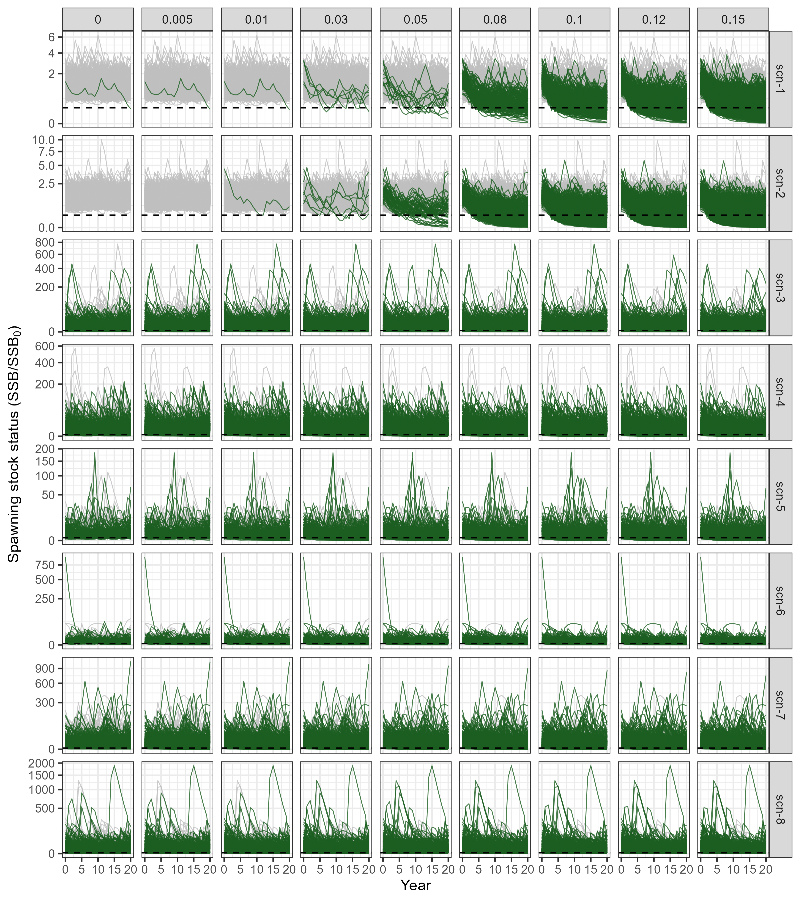
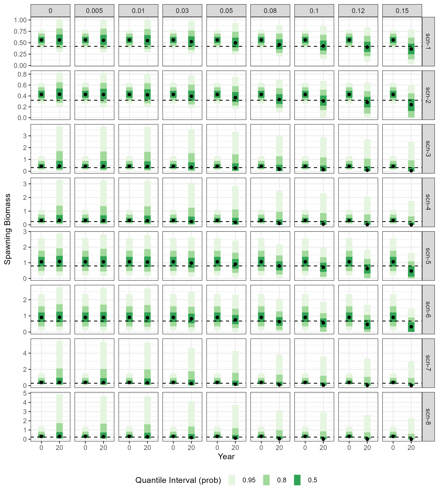
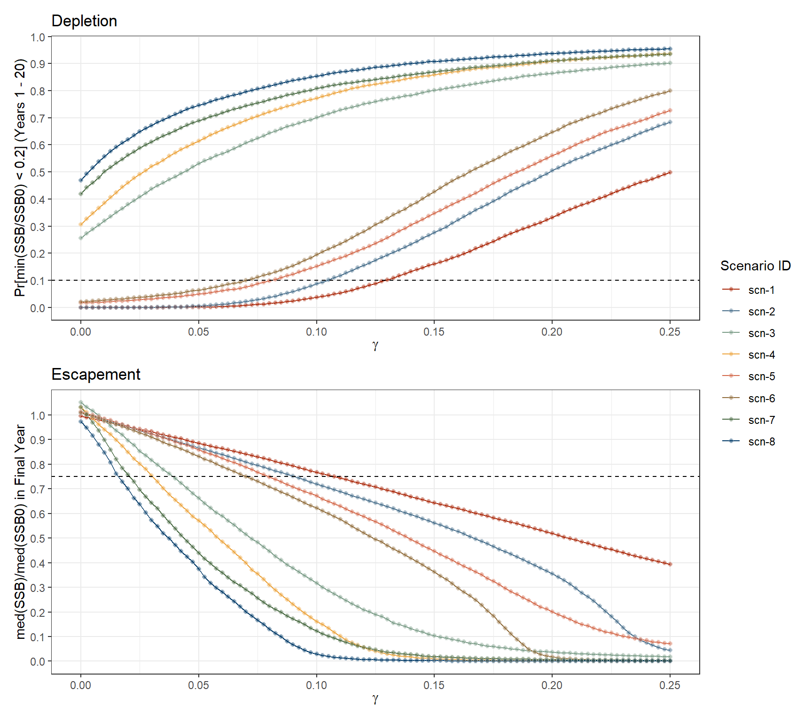

2 GYM/Grym Analysis
Estimating precautionary harvest rates using GYM/Grym under alternative input values
2.1 Introduction
The current management of the Antarctic Krill fishery is based on establishing precautionary catch limits that comply with sustainability principles set out by the Commission for the Conservation of Antarctic Marine Living Resources (CCAMLR, Constable et al. 2000). In practice, these catch limits are set on the basis of a constant long-term precautionary annual yield (\(Y_p\)), which is determined as the proportion (\(\gamma_p\)) of the pre-exploitation biomass of the population (\(B_0\)) that can be harvested annually while ensuring that CCAMRL objectives are achieved:
\[Y_p = \gamma_p B_0\]
The estimation of \(B_0\) and \(\gamma_p\), which can be though of as the precautionary harvest rate, are major tasks in the assessment of Krill fisheries.
Estimation of \(\gamma_p\) relies on a frequentist probability approach using Monte-Carlo simulations. In this approach, a stochastic population dynamics model is used to project the stock forwards in time under a range of potential \(\gamma\) values, each representing a different fraction of \(B_0\) taken as a constant catch in each year of the projection.
For each projection, the population’s pre-exploitation state and key stock parameters (e.g. yearly recruitment, mortality, growth) are drawn at random from suitable statistical distributions that account for the natural variability in the population as well as the uncertainty about those key parameters. Projections are repeated thousands of times for new randomly drawn parameter values to evaluate the probability distribution of population status at each year of the projection period under different levels of yield (and thus, fishing mortality). The projection period covers a minimum of 20 years to ensure that long-term trends in the population can be adequately assessed.
Finally, \(\gamma_p\) is determined using the following three-step decision rule (Constable et al. 2000):
Depletion rule: choose a harvest rate, \(\gamma_1\), so that the probability of the spawning stock biomass (\(SSB\)) dropping below 20% of its pre-exploitation level (\(SSB_0\)) at any given year of a 20-year harvesting period is no more than 10%1.
Escapement rule: choose a harvest rate, \(\gamma_2\), so that the median escapement at the end of a 20 year period is 75% of the pre-exploitation median level - i.e. the \(\gamma\) at which the median of the distribution of \(SSB\) after 20 years of harvesting is no less than 75% of the median2 of \(SSB_0\).
Select \(\gamma_p\) the lower of \(\gamma_1\) and \(\gamma_2\) values (which returns an harvest rate that is consistent with both previous rules).
The relative magnitudes of \(\gamma_1\) or \(\gamma_2\) depend largely on the level of recruitment variability and the degree of uncertainty associated with the estimate of \(B_0\) used in the model (Constable et al. 2000).
2.1.1 The GYM/Grym framework
The ongoing catch limit for Antarctic Krill was established in 2010 (CCAMLR 2022) based on a \(\gamma_p\) estimated from the Generalized Yield Model (GYM) developed by Constable and de la Mare (1996). GYM is an age-structured, non-spatially explicit, single-stock simulation model that accounts for natural variability and uncertainty on population estimates. GYM is not a statistically fitted stock assessment model - i.e. it does not estimate stock parameters from input data. Therefore, all input parameters must be estimated externally and provided directly to the model.
GYM, originally written in Fortran, was later updated and converted into the R package {Grym} (D. Maschette et al. 2020), which was used to develop CCAMLR’s base case implementation of Krill assessment for management advice purposes. D. Maschette and Wotherspoon (2021) describe the main input parameters used by GYM/Grym for modelling the Krill fishery.
Most relevant features of the GYM/Grym base case configuration for the Krill stock include:
Stock is structured into 7 age-classes, and assumes that individuals recruit to the modelled stock at age 1. Therefore, the model covers the age ranges 1-2 up to 7-8 years old.
The final age-class is not an age-plus group, i.e. it is assumed that no individual lives more than 8 years.
Stock dynamics are modelled at daily time steps, i.e. the model evaluates the status of the stock at 365 time-points whithin each year of the projection period.
Recruitment is not dictated by a conventional stock-recruitment relationship, such as the Beverton-Holt or the Ricker functions. Instead, yearly numbers of recruits \(R_y\) are simulated as random deviates from a mean recruitment that is constant over time, regardless of the spawning stock size. However, the model includes a depletion factor that reduces the simulated recruitment in a given year when the stock falls below the depletion critical point (i.e. \(SSB < 0.2 \, SSB_0\)) in the preceding year. The magnitude of this reduction is proportional to the percentage drop from the critical depletion point.
The main sources of stochasticity between simulations are:
Yearly Recruitment: \(R_y\) series are randomly generated from a statistical distribution (Inverse-Beta in the base case) with a fixed mean of 1 and variance estimated from the Proportional Recruitment (PR) model. Recruitment variance, accounting for natural variability in the recruitment process, remains fixed over all years of the projection period, in a given simulation.
Recruitment variance: to account for uncertainty in the estimate of recruitment variance, each simulation uses a new random draw of PR estimates, which are generated in the PR analysis (Chapter 1).
Natural Mortality: for each simulation, a single random value of annual scaling of natural mortality (\(M\)) is used to simulate the degree of stock decay due to non-fishing causes over the entire projection period (i.e. \(M\) assumed age-independent and constant over time). Natural mortality is also estimated in the PR model, which provides random draws of \(M\) accounting for the uncertainty in the estimation process (Chapter 1).
Maturity and gear selectivity ogives: the midpoints of the ogive ramps describing, respectively, the length-class at which 50% of its individuals are mature or available to the fishery, are randomly draw in each simulation from a uniform distribution bounded by a selected minimum and maximum lengths. This accounts for the lack of knowledge about the exact length at which 50% of Krill are either mature or selectable by the fishery. Sampled midpoint values are the same in all years of a given projection.
Pre-exploitation Biomass Survey Estimate: within each simulation, the annual catch limit under each of the considered \(\gamma\) values is simulated as \(Y = \gamma \widehat{B_0}\), where \(\widehat{B_0}\) is a survey estimate of pre-exploitation biomass. To simulate this estimation process, \(\widehat{B_0}\) values are generated by applying log-normal errors to the simulated \(B_0\) values, with variance \(B0logSD^2\) reflecting the sampling error in surveys. The input value of parameter \(B0logSD\) is calculated externally from survey data (e.g. Kinzey 2021).
In each simulation, sampled values of stochastic parameters are held fixed across projections covering the range of considered \(\gamma\) values. This approach ensures that observed changes in population forecasts within a given simulation are solely attributable to different fishing pressures and not confounded by randomness underlying the simulation process.
Grym provides the ability the decompose natural mortality and fishing mortality into intra-year components to account for within-year patterns in mortality incidence. However, under the base-case implementation, natural and fishing mortality are assumed to impact all individuals equally through the year.
Weight-at-length and length-at-age relationships are assumed to be fully deterministic, meaning that growth is considered to be unaffected by natural variability, while power law parameters and von Bertalanffy growth parameters are treated as known without error.
2.1.2 Analysis goal
Here we run the GYM/Grym base-case implementation for 8 alternative scenarios of input parameter values, resulting from combining four different PR estimation scenarios with two options for the maturity-at-length ogive curve. This is similar to the ensemble analysis previously conducted by D. Maschette et al. (2021), with the exception that here we assume recruitment to follow a Log-Normal process.
Random draws of \(M\), recruitment variability \(CV_R\) and related PR estimates for each of the four PR scenarios were pre-generated in Chapter 1.
2.2 Estimating \(\gamma_p\) under alternative Grym parameter values
2.2.1 Specify input scenarios
We begin with setting up the combination of Grym parameter values for each scenario. We consider 3 groupings of input parameters:
- Recruitment parameters estimated from four different PR scenarios (Chapter 1)
- Maturity-at-length parameters from two 2 alternative maturity ogive curves
- All remaining input parameters, which take unique values across scenarios.
Code
# Proportional Recruitment scenarios
prop_rec_scenarios <- read_xlsx(
path = "../part1_shared_files/inputs/grym_parameter_scenarios.xlsx",
sheet = "rec_proportion_scenarios"
) |>
select(-ref)
# Maturity at length scenarios
maturity_scenarios <- read_xlsx(
path = "../part1_shared_files/inputs/grym_parameter_scenarios.xlsx",
sheet = "maturity_ogive_scenarios"
) |>
select(-ref)
# fixed parameters
fixed_pars <- read_xlsx(
path = "../part1_shared_files/inputs/grym_parameter_scenarios.xlsx",
sheet = "fixed_parameters")
# load draws of M and CV_R for each PR scenario
pr_cvR_M_draws_scen <- read_rds("../part1_shared_files/outputs/cvR_M_draws_scen.rds")The four PR scenarios are displayed in Table 1.1. Parameter values for each of the maturity ogive curves are displayed in Table 2.1, and fixed Grym input parameters are presented in Table 2.2.
Code
maturity_scenarios |>
flextable() |>
set_header_labels(
mat_scen_id = "Maturity ID",
source = "Source",
mat50Min = "Min length 50% mature (mm)",
mat50Max = "Max length 50% mature (mm)",
matrange = "Ogive ramp width (mm)"
)Maturity ID | Source | Min length 50% mature (mm) | Max length 50% mature (mm) | Ogive ramp width (mm) |
|---|---|---|---|---|
mat-2010 | WG-EMM-2010 | 32.0 | 37.0 | 6.0 |
mat-2021 | US-AMLR summer surveys | 37.6 | 44.3 | 8.8 |
Code
# cit_keys <- fixed_pars |>
# distinct(citation_key) |>
# drop_na() |>
# mutate(ref_symb = tolower(as.roman(1:n())))
fixed_pars |>
select(-c(parameter_tag, reference)) |>
flextable() |>
set_header_labels(
category = "Category",
parameter_label = "Parameter",
value = "Value",
citation_key = "Reference"
) |>
merge_v(j = 1) |>
flextable::fix_border_issues() |>
colformat_md()Category | Parameter | Value | Reference |
|---|---|---|---|
PR model | Reference age | 2 | Maschette et al. (2021) |
Recruitment distribution | Log-Normal | ||
Mortality | Within-year natural mortality pattern | constant | |
Population model structure | First Age Class | 1 | Thanassekos et al. (2021) |
Last Age Class | 7 | Constable and de la Mare (1996) | |
Age plus group | No | ||
Time steps (days) | 365 | ||
Length-at-age (von Bertalanffy) | t0 | 0 | Constable and de la Mare (1996) |
L∞ (mm) | 60 | Constable and de la Mare (1996) | |
K | 0.48 | Thanassekos et al. (2021) | |
Start growth period (day/month) | 21/Oct | Thanassekos et al. (2021) | |
End growth period (day/month) | 12/Feb | Thanassekos et al. (2021) | |
Weight-at-length | Weight-length parameter - A (g) | 2.24E-06 | SC-CAMLR (2000) |
Weight-length parameter - B | 3.314 | SC-CAMLR (2000) | |
Spawning season | Start of spawning season (day/month) | 15/Dec | Kawaguchi (2016) |
End of spawning season (day/month) | 15/Feb | Kawaguchi (2016) | |
Selectivity ogive | Min length, 50% Selected (mm) | 30 | Thanassekos et al. (2021) |
Max length, 50% Selected (mm) | 35 | Thanassekos et al. (2021) | |
Ramp width (mm) | 11 | Thanassekos et al. (2021) | |
Fishing effort | Start of Fishing Season (day/month) | 01/Dec | Thanassekos et al. (2021) |
End of Fishing Season (day/month) | 30/Nov | Thanassekos et al. (2021) | |
B0 estimation | Uncertainty in B0 estimate | 0.361 | Kinzey (2021) |
Start of monitoring interval (day/month) | 01/Jan | Thanassekos et al. (2021) | |
End of monitoring interval (day/month) | 15/Jan | Thanassekos et al. (2021) | |
Miscellaneous | Reference Date (day/month) | 01/Oct | Thanassekos et al. (2021) |
Simulation options | Reasonable upper bound for Annual F | 1.5 | Constable and de la Mare (1996) |
Projection length (number of years) | 20 | ||
Number of iterations | 10001 |
Code
# flextable::footnote(
# j = ~ value,
# i = ~ citation_key %in% cit_keys$citation_key,
# ref_symbols = left_join(fixed_pars, cit_keys, by = "citation_key") |> drop_na(citation_key) |> pull(ref_symb),
# value = as_paragraph_md(
# fixed_pars |> drop_na(citation_key) |> distinct(citation_key) |> pull(citation_key)
# ), inline = TRUE
# ) Next we create a look-up table specifying the simulation scenarios, determined by combining the PR scenarios and the two maturity ogive alternatives.
Code
# Key of scenarios under consideration for Grym simulations
grym_scenarios_key <- expand_grid(
pr_scen_id = prop_rec_scenarios$pr_scen_id,
mat_scen_id = maturity_scenarios$mat_scen_id
) |>
mutate(scenario_id = glue::glue("scn-{1:n()}"), .before = 1)
# save for later
write_rds(grym_scenarios_key, "../part1_shared_files/inputs/scenarios_key.rds")
grym_scenarios_key |>
flextable() |>
set_table_properties(width = 0.6, layout = "autofit") |>
set_header_labels(
scenario_id = "Scenario ID",
pr_scen_id = "PR Scenario ID",
mat_scen_id = "Maturity ID"
)Scenario ID | PR Scenario ID | Maturity ID |
|---|---|---|
scn-1 | PR-emm21 | mat-2010 |
scn-2 | PR-emm21 | mat-2021 |
scn-3 | PR-amlr | mat-2010 |
scn-4 | PR-amlr | mat-2021 |
scn-5 | PR-atlantida | mat-2010 |
scn-6 | PR-atlantida | mat-2021 |
scn-7 | PR-amlr-haul | mat-2010 |
scn-8 | PR-amlr-haul | mat-2021 |
2.2.2 Set \(\gamma\) values under consideration
We also need to define the range of harvest rates \(\gamma\) over which population projections will be run. We chose to use equally spaced rates, ranging from no harvest (\(\gamma = 0\)) to a constant annual harvest rate of 25% of the pre-exploitation biomass (\(\gamma = 0.25\)), with 0.25% increments between them.
# sequence of gamma values
# i.e. testing fixed annual harvest rates from 0% to 25% of B0, for increments of 0.25%
gamma_seq <- seq(0, 0.25, by = 0.0025)
gamma_seq [1] 0.0000 0.0025 0.0050 0.0075 0.0100 0.0125 0.0150 0.0175 0.0200 0.0225
[11] 0.0250 0.0275 0.0300 0.0325 0.0350 0.0375 0.0400 0.0425 0.0450 0.0475
[21] 0.0500 0.0525 0.0550 0.0575 0.0600 0.0625 0.0650 0.0675 0.0700 0.0725
[31] 0.0750 0.0775 0.0800 0.0825 0.0850 0.0875 0.0900 0.0925 0.0950 0.0975
[41] 0.1000 0.1025 0.1050 0.1075 0.1100 0.1125 0.1150 0.1175 0.1200 0.1225
[51] 0.1250 0.1275 0.1300 0.1325 0.1350 0.1375 0.1400 0.1425 0.1450 0.1475
[61] 0.1500 0.1525 0.1550 0.1575 0.1600 0.1625 0.1650 0.1675 0.1700 0.1725
[71] 0.1750 0.1775 0.1800 0.1825 0.1850 0.1875 0.1900 0.1925 0.1950 0.1975
[81] 0.2000 0.2025 0.2050 0.2075 0.2100 0.2125 0.2150 0.2175 0.2200 0.2225
[91] 0.2250 0.2275 0.2300 0.2325 0.2350 0.2375 0.2400 0.2425 0.2450 0.2475
[101] 0.2500Finally we generate a grid table with input parameter setups under each scenario, which will be the reference table for the Grym simulations.
Code
# spread fixed parameters over columns
fixed_pars_wide <- fixed_pars |>
select(parameter_tag, value) |>
pivot_wider(names_from = parameter_tag)
# merge fixed parameters with scenario's grid table
grym_scen_inputs <- grym_scenarios_key |>
left_join(maturity_scenarios, by = "mat_scen_id") |>
select(-source) |>
add_column(fixed_pars_wide)
# tibble with list-columns for parameters requiring non-scalar objects
grym_scen_setups <- grym_scen_inputs |>
mutate(across(.cols = c(pr_ref_age, first_age, last_age, nsteps, n.years, n_iter), as.integer)) |>
mutate(across(.cols = c(t0:K, a, b, sel50Min:selrange, B0logsd, Fmax), as.numeric)) |>
rowwise() |>
mutate(
.keep = "unused",
Ages = list(first_age:last_age), # Age-classes
spawnI = list(get_daily_steps(spawning_start, spawning_end, ref_date)),
monitorI = list(get_daily_steps(monitoring_start, monitoring_end, ref_date)),
fishingI = list(get_daily_steps(fishing_start, fishing_end, ref_date)),
f0 = days_since_ref(growth_start, ref_date)/365, # fraction of year at which growth starts,
f1 = days_since_ref(growth_end, ref_date)/365, # fraction of year at which growth ends
) |>
mutate(
# draws of PR estimates (M, CV_R, mnQ, vrQ)
prRecruitPars = pr_cvR_M_draws_scen[pr_scen_id],
# recruitment generating function for assumed rec dist
prRecruit = case_when(
pr_dist == "Log-Normal" ~ list(recLogNormal),
pr_dist == "Gamma" ~ list(recGamma),
pr_dist == "Invserse-Beta" ~ list(recInverseBeta)
),
# Within-year M pattern
ms = case_when(
M_within_year == "constant" ~ list(matrix(1, nsteps+1, length(Ages)))
),
# sequence of harvest rates over which to run population projections
gamma = list(gamma_seq),
outputs_path = outputs_path
)
write_rds(grym_scen_setups, "../part1_shared_files/inputs/grym_scen_setups.rds")
grym_scen_setups2.2.3 Run Grym models
In this section we run the Grym simulations, and thus the estimation of \(\gamma_y\), for each scenario. We do this by sequentially mapping the function run_grym_krill() to each scenarios setup. Function run_grym_krill() is a wrapper that runs simulations within each scenario in parallel, using the projection function KrillProjection(). It then selects the \(\gamma_1\) and \(\gamma_2\) values for the scenario being evaluated.
# Note: runtime is substantial (~8hrs across 20 cores), so we don't want to run
# this chunk on rendering!
# Progress bar configuration
handlers(handler_progress(
format = ":spin :current/:total [:bar] :percent in :elapsed ETA: :eta",
width = 70)
)
# set-up cores for parallization
future::plan(multisession, workers = future::availableCores()-1)
# run simulations - needs to be wrapped in `with-progress` to get progress bars
# for projection runs
tictoc::tic()
grym_scen_outputs <- progressr::with_progress(
pmap(grym_scen_setups, run_grym_krill),
delay_stdout = FALSE
)
tictoc::toc()
# switch back to sequential computations
future::plan(sequential)
names(grym_scen_outputs) <- grym_scen_setups$scenario_id
# Write out object with all the results (compressing due to large size)
write_rds(grym_scen_outputs,
"../part1_shared_files/outputs/grym/grym_scen_results.rds",
compress = "gz",
compression = 9)2.3 Results
2.3.1 Simulated Spawning Stock trajectories
Figure 2.1 presents the simulated trajectories of spawning Stock Status (\(SSS\)), expressing the proportion of \(SSB\) relative to \(SSB_0\), at each year of the projecting period. As expected, in all scenarios, trajectories show an increasing proportion of simulations in which \(SSB\) drops bellow 20% of \(SSB_0\) as the level of harvesting \(\gamma\) increases.
It is also clear that input scenarios with higher levels of recruitment variability and uncertainty in \(M\) estimates (scen-3 to scen-8, check Table 2.3 and Figure 1.1 for reference) produce widely variable \(SSS\) trajectories. As a result, a large proportion of simulations falls below the depletion threshold even in the absence of fishing (i.e. \(\gamma = 0\)).
Code
grym_scen_outputs_sub <- read_rds("../part1_shared_files/outputs/grym/grym_scen_outputs_sub.rds")
# plots of simulated SSS across years, for each scenario under a subset of gammas
# SSS trajectories that go below 0.2 are signaled in green
p <- grym_scen_outputs_sub |>
ggplot(aes(x = Year, y = SSS, group = Run)) +
geom_path(
data = ~filter(.x, below_dpl == FALSE),
alpha = 0.8, color = "gray75", linewidth = 0.3
) +
geom_path(
data = ~filter(.x, below_dpl == TRUE),
alpha = 0.8, color = "#1B5E20", linewidth = 0.3
) +
geom_hline(yintercept = c(0.2), linetype = "dashed") +
scale_y_sqrt() +
guides(colour="none") +
labs(y = expression(paste("Spawning stock status (SSB/", SSB[0], ")"))) +
facet_grid(rows = vars(scenario_id), cols = vars(Gamma), scales = "free_y")
ggsave(
plot = p,
filename = "../part1_shared_files/outputs/grym/grym_SSS_scenarios.png",
width = 8,
height = 9
)
The impact of increasing \(\gamma\) values on the biomass of spawners at the end of the projection period (\(SSB_Y\)) is also evident in Figure 2.2. As expected, distributions of \(SSB_Y\) fall further from \(SSB_0\) distributions as annual harvest rates increase.
In addition, plots in Figure 2.2 illustrate how variability in recruitment (\(R\)) and \(M\) affect the escapement levels on the stock. Specifically, simulations under scenarios scn-3 to scn-8, which are based on estimates of \(M\) and \(R\) with higher variability (as shown by wider quantile intervals), tend to produce median \(SSB_Y\) values that drop below 75% of the median \(SSB_0\) at lower \(\gamma\) values compared to those simulated under scenarios scn-1 and scn-2 (which have narrower quantile intervals).
Code
# get simulated values of SSB0 and SSB in final year of the projection
spawners <- grym_scen_outputs_sub |>
filter(Year %in% max(Year)) |>
select(scenario_id, Run, Gamma, SSB, SSB0) |>
pivot_longer(cols = c(SSB , SSB0), names_to = "metric") |>
mutate(
metric = if_else(metric == "SSB", "SSBY", metric),
Year = if_else(metric == "SSBY", "20", "0")
)
# compute medians SSB0 and SSB across all simulations , under each scenario
med_spawners <- spawners |>
group_by(scenario_id, metric, Year, Gamma) |>
summarise(medians = median(value), .groups = "drop")
# Compute escapement threshold value, i.e. 75% of median SSB0)
# Note: values are constant across gammas, as simulated SSB0s are held constant
# across gamma-specific projections.
esc_thresh <- med_spawners |>
filter(metric == "SSB0") |>
mutate(esc_thrs = medians*0.75)
p2 <- spawners |>
ggplot(aes(x = Year, y = value)) +
ggdist::stat_interval() +
geom_point(data = med_spawners, aes(y = medians)) +
geom_hline(data = esc_thresh, aes(yintercept = esc_thrs), linetype = "dashed") +
facet_grid(scenario_id ~ Gamma, scales = "free") +
labs(y = "Spawning Biomass", ) +
# scale_colour_grey(end = 0.2, start = 0.8)
scale_color_brewer(palette = "Greens", name = "Quantile Interval (prob)") +
theme(legend.position="bottom")
ggsave(
plot = p2,
filename = "../part1_shared_files/outputs/grym/grym_SSB0_SSBY_dstbn_scenarios.png",
width = 8,
height = 9
)
2.3.2 Depletion probability and Escapement levels versus \(\gamma\) values
Figure 2.3 shows the depletion probability3 and the escapement level4 at the considered range of harvest rates. Here are the main observations:
For scenarios scn-3, scn-4, scn-7 and scn-8, probability of depletion would be considerably above the 10% critical limit even in the absence of fishing (i.e. \(\gamma = 0\)).
In the remaining scenarios, depletion probability would remain under the 10% critical limit for \(\gamma\) values up to 0.075 (scn-6) and 0.125 (scn-1).
Escapement levels stay above the 75% threshold for a large range of \(\gamma\) values, depending on the input scenario. For example, simulations under scn-1 inputs suggest that stock would remain above the 75% escapement threshold for constant harvest rates up to 10% of \(B_0\) (i.e. \(\gamma = 0.1\)), while for scn-8 the stock would fall below precautionary escapement levels under constant harvest rates above 2% of \(B_0\) (i.e. \(\gamma = 0.02\)).
Both plots illustrate how alternative maturity ogives can have a significant impact on the simulation outcomes, as highlighted by the separation between pairs of scenarios (scn-1 & scn-2, scn-3 & scn-4, etc.). Scenarios using the mat-2010 maturity ogive, such as scn-1, scn-3, scn-5, and scn-7, which yields a higher percentage of mature individuals at smaller sizes, show greater resilience to fishing pressure. The projections suggest that under these scenarios, the stock could withstand higher levels of \(\gamma\) before falling to unsustainable levels of depletion risk and escapement.
Code
grym_dpl_esc_gammas <- read_rds("../part1_shared_files/outputs/grym/grym_dpl_esc_gammas.rds")
# Plot for depletion probability under considered gammas
p_dpl <- plot_gammas_vs_rule(
dt = grym_dpl_esc_gammas,
gamma = Gamma,
rule_value = Pr_depleted,
scen = scenario_id,
thresh = 0.1,
ylab = "Pr[min(SSB/SSB0) < 0.2] (Years 1 - 20)",
xlab = expression(gamma),
title = "Depletion",
scen_label = "Scenario ID"
)
# Plot for escapement level under considered gammas
p_esc <- plot_gammas_vs_rule(
dt = grym_dpl_esc_gammas,
gamma = Gamma,
rule_value = Escapement,
scen = scenario_id,
thresh = 0.75,
title = "Escapement",
ylab = "med(SSB)/med(SSB0) in Final Year",
xlab = expression(gamma),
scen_label = "Scenario ID"
)
p_dpl/p_esc + plot_layout(guides = 'collect')
2.3.3 Estimated \(\gamma_p\) under each input scenario
Finally, we determine the precautionary harvest rate \(\gamma_p\) for each input scenario based on the 3-stage decision rule (Table 2.4).
As expected, the chosen Proportional Recruitment scenario had the largest impact on the estimated values of \(\gamma_p\). Specifically, scenarios using PR estimates reflecting lower variability and uncertainty in \(R\) and \(M\) (scn-1 and scn-2) resulted in higher estimates of \(\gamma_p\), based on the escapement rule (\(\gamma_2\)). Conversely, scenarios scn-3, scn-4, scn-7 and scn-8, based on PR estimates conveying the highest variability in \(R\) and \(M\) (PR-amlr and PR-amlr-haul), returned \(\gamma_p\) estimates of 0 based on the depletion rule (\(\gamma_1\)). In fact, as seen in Figure 2.3, under these scenarios, the risk of depletion in the absence of fishing is already very high, between approximately 25% and 45%.
The effect of maturity-at-length on \(\gamma_p\) estimates is also evident, as previously observed in Figure 2.3. Scenarios employing the mat-2021 ogive yielded lower estimates of \(\gamma_p\) compared to scenarios using the mat-2010 ogive. Under the same selectivity ogive, the mat-2021 ogive allows a larger number of immature individuals to be vulnerable to the fishery than the mat-2010 ogive. This leads to a reduced incidence of spawners in an exploited population, causing a faster decline of \(SSB\) from \(SSB_0\) over the projection period. Consequently, the estimates of \(\gamma_p\) are lower and more conservative when the mat-2021 ogive is applied.
Scenarios scn-5 and scn-6 are also interesting because they demonstrate how variability in maturity ogives can affect which of the decision rules determines the choice of \(\gamma_p\). Specifically, population simulations using the mat-2021 ogive (scn-6), which sample midpoints from a larger range of values (i.e. higher variability) than the mat-2010 ogive (scn-5), hit the depletion rule at lower \(\gamma\) values than the escapement rule (i.e. \(\gamma_1 < \gamma_2\)).
Code
grym_gammas_tbl <- read_rds("../part1_shared_files/outputs/grym/grym_gammas_tbl.rds")
# gammas in math format
gamma_symb <- c("\\gamma_1", "\\gamma_2", "\\gamma_p")
grym_gammas_tbl |>
mutate(across(-scenario_id, as.numeric)) |>
mutate(across(c(Gamma_1, Gamma_2), ~if_else(is.infinite(.), 0, .))) |>
left_join(grym_scenarios_key, by = "scenario_id") |>
relocate(Gamma_1:Gamma_choice, .after = last_col()) |>
mutate(gamma_p = pmin(Gamma_1, Gamma_2)) |>
select(-Gamma_choice) |>
flextable() |>
set_table_properties(width = 0.8, layout = "autofit") |>
#bold(j = ~ gamma_p) |>
bold(j = ~ Gamma_1, i = ~ Gamma_1 < Gamma_2) |>
bold(j = ~ Gamma_2, i = ~ Gamma_2 < Gamma_1) |>
vline(j = ~ Gamma_2, border = fp_border_default(width = .5)) |>
bg(j = ~ gamma_p, bg = "#E8F5E9", part = "all") |>
set_header_labels(
scenario_id = "Scenario ID",
pr_scen_id = "PR Scenario ID",
mat_scen_id = "Maturity ID"
) |>
width(j = ~ Gamma_1 + Gamma_2 + gamma_p, width = 10) |>
compose(j = ~ Gamma_1 + Gamma_2 + gamma_p,
part = "header",
value = as_paragraph(as_equation(gamma_symb))) |>
align(j = ~ Gamma_1 + Gamma_2 + gamma_p, align = "center")Scenario ID | PR Scenario ID | Maturity ID |
|
|
|
|---|---|---|---|---|---|
scn-1 | PR-emm21 | mat-2010 | 0.1275 | 0.1075 | 0.1075 |
scn-2 | PR-emm21 | mat-2021 | 0.1025 | 0.0900 | 0.0900 |
scn-3 | PR-amlr | mat-2010 | 0.0000 | 0.0375 | 0.0000 |
scn-4 | PR-amlr | mat-2021 | 0.0000 | 0.0300 | 0.0000 |
scn-5 | PR-atlantida | mat-2010 | 0.0800 | 0.0775 | 0.0775 |
scn-6 | PR-atlantida | mat-2021 | 0.0675 | 0.0700 | 0.0675 |
scn-7 | PR-amlr-haul | mat-2010 | 0.0000 | 0.0200 | 0.0000 |
scn-8 | PR-amlr-haul | mat-2021 | 0.0000 | 0.0150 | 0.0000 |
2.4 Wrapping Up
We now have estimates of \(\gamma_p\) using the current Grym base-case implementation for the Krill stock under alternative input parameter values. The next step is to replicate this estimation process using the openMSE/DLMtool and assess whether these two frameworks could be used interchangeably.
2.5 Supplementary Code
Wrapper function for running simulations across scenarios
# --------------------------------------------------------------------------------
# Run GRYM simulations for the assessment/managements of antarctic krill
# --------------------------------------------------------------------------------
#
# This is a wrapper on code provided for krill's assessement base-case, useful
# for setting up Grym runs under different input scenarios. Specifically:
# - Uses the projection function `KrillProjection()`
# - Derives gammas based on decision rules
#
# --------------------------------------------------------------------------------
run_grym_krill <- function(nsteps, Ages, spawnI, monitorI, fishingI,
t0, K, Linf, f0, f1, a, b, sel50Min, sel50Max, selrange,
mat50Min, mat50Max, matrange, B0logsd, prRecruitPars, prRecruit,
gamma, n.years, ms, Fmax, n_iter, scenario_id, pr_scen_id,
mat_scen_id, outputs_path, ...){
cli::cli_h2("Running GRYM for scenario {scenario_id} [{pr_scen_id}:{mat_scen_id}]")
# ---- Set-up projection function
Project <- KrillProjection(nsteps, Ages, spawnI, monitorI, fishingI,
t0, K, Linf, f0, f1, a, b, sel50Min, sel50Max, selrange,
mat50Min, mat50Max, matrange, B0logsd, prRecruitPars, prRecruit,
gamma, n.years, ms, Fmax)
# ---- Run projections for all gamma values, paralellizing over iterations
cli::cli_alert_info("Running projections")
#future::plan(multisession, workers = future::availableCores()-1)
# set progressor counter
p <- progressr::progressor(steps = n_iter)
# run projections (for all gammas)
scen_proj <- furrr::future_map_dfr(
1:n_iter, function(x){
out <- Project(x)
p()
out
},
.options = furrr_options(seed = TRUE)
) |>
mutate(scenario_id = scenario_id, .before = 1)
# future::plan(sequential)
#cat("\n\n")
cli::cli_alert_success("Finished projections for scenario {scenario_id}")
# ---- Deriving gammas (using code from workshop)
cli::cli_alert_info("Deriving gamma1, gamma2, and final chosen gamma")
gamma_results <- list()
#gamma_results$Scenario <- scenario_id
gamma_results$dep_rule <- scen_proj |>
group_by(Gamma, Run) |>
summarize(min_pop_status = min(SSB/SSB0), .groups = "drop_last") |>
summarize(Pr_depleted = mean(min_pop_status < 0.2)) |>
mutate(scenario_id = scenario_id, .before = 1)
# Given the gamma values tested, gamma 1 is:
gamma_results$Gamma_1 <- max(gamma_results$dep_rule$Gamma[gamma_results$dep_rule$Pr_depleted<=0.1])
# What is the approximate Gamma that meets 10% depletion to test.
gamma_results$test_gamma_1 <- approx(gamma_results$dep_rule$Pr_depleted,gamma_results$dep_rule$Gamma,0.1, ties = mean)$y
# Gamma 2:
gamma_results$esc_rule <- scen_proj |>
group_by(Gamma) |>
filter(Year %in% max(Year)) |>
summarise(ssb_med = median(SSB), ssb0_med = median(SSB0)) |>
mutate(
Escapement = ssb_med/ssb0_med,
scenario_id = scenario_id
)
#gamma_results$esc_rule$Escapement<-gamma_results$esc_rule$ssb_med/gamma_results$esc_rule$ssb0_med
#Given the gamma values tested, gamma 2 is:
gamma_results$Gamma_2<-max(gamma_results$esc_rule$Gamma[gamma_results$esc_rule$Escapement>=0.75])
#What is the approximate Gamma that meets 75% escapement to test.
gamma_results$test_gamma_2 <- approx(gamma_results$esc_rule$Escapement,gamma_results$esc_rule$Gamma,0.75, ties = mean)$y
#The actual Gamma is the smallest of the two gammas:
gamma_results$GammaToUse <- which(c(gamma_results$Gamma_1,gamma_results$Gamma_2)==
min(gamma_results$Gamma_1,gamma_results$Gamma_2)) #Which gamma is min?
if(length(gamma_results$GammaToUse)==2){gamma_results$GammaToUse=3} #when gamma1 and gamma2 are equal
gamma_results$Selected_gamma<-as.data.frame(cbind(gamma_results$Gamma_1, gamma_results$Gamma_2,
gamma_results$GammaToUse, scenario_id))
names(gamma_results$Selected_gamma) <- c("Gamma_1", "Gamma_2", "Gamma_choice", "scenario_id")
# writing out projections
cli::cli_alert_info("Writing out results")
results <- list(scen_proj = scen_proj, gamma_results = gamma_results)
write_rds(
results,
file = fs::path(outputs_path, glue::glue("grym_results_{scenario_id}_{pr_scen_id}_{mat_scen_id}.rds")),
compress = "gz",
compression = 9
)
results
}Krill Base-case projection function
This is modified version of the KrillProjection() function available in CCAMLR’s Krill base-case repo that adds arguments ms and Fmax, for convenience.
# --------------------------------------------------------------------------------
# GRYM's Projection function for Krill
# --------------------------------------------------------------------------------
#
# Modified by BARC in 15/12/2021 to:
#
# - include the parameter `ms` as a function argument to allow for the
# specification of intra-annual natural mortality patterns
#
# - remove unused arguments for proportional recruitment estimates
#
# - Add argument `Fmax`, defining a reasonable upper bound for Annual F
# --------------------------------------------------------------------------------
KrillProjection <- function(
nsteps, Ages, #time step numbers and age classes
spawnI,monitorI,fishingI, #Interval sequences
t0,K,Linf,f0,f1, #Growth details
a, b, #Length/Weight Details
sel50Min, sel50Max, selrange, #Selectivity Parameters
mat50Min, mat50Max, matrange, #Maturity parameters
B0logsd, #biomass log cv
prRecruitPars,prRecruit, #recruitment parameters and quantile function
gamma=c(0,0.04,0.08,0.1),
n.years=20, #Test details
ms, # matrix with intra-annual natural mortality patterns for each age class (dimesions: nr time intervals x nr age-classes)
Fmax
) {
if(!inherits(prRecruitPars, "matrix")) prRecruitPars <- as.matrix(prRecruitPars)
# Create a sequence from 0-1 for each time step. The value is the proportion of that timestep in the year.
Days <- seq(0,1,length=nsteps+1)
#The proportion of an individual time step in the year (0.002739726 for daily timesteps)
h <- 1/nsteps
## Spawning and monitoring interval are defined as inputs into the function.
## Should be as timesteps eg 76:138
## Ages, length at age and weight at age
ages <- outer(Days,Ages,FUN="+")#Ages of each age class for every timestep
ls <- vonBertalanffyRAL(ages,t0=t0,K=K,Linf=Linf,f0=f0,f1=f1)#length of each age class for every timestep
ws <- powerLW(ls,a=a,b=b)#weight of each age class for every timestep
## Constant intra-annual natural mortality
# ms <- matrix(1,nsteps+1,length(Ages))#Proportion of mortality to apply for each timestep to each age class (if constant should all be one)
Ms <- ctrapz(ms,h)# Cumulative timestep proportional mortality
Msf <- final(Ms)#Sum of mortality for each age class (if constant across ages, should all be one.)
## Within year fishing pattern - season is first 90 days
fwy <- double(nsteps+1) #Sequence of 0s for the length of the year
fwy[fishingI] <- 1 #Set the fishing season increments to 1.
fwy <- fwy/mean(fwy) #Average the fishing mortality so the average is 1 across all increments.
#B0logsd <- 0.2
## This function performs the a projection for each prescibed gamma.
function(run) {
## Length based maturity and selectivity - ramp width is constant
## but the midpoint is selected uniformly from a range.
gs <- rampOgive(ls,runif(1,mat50Min,mat50Max),matrange) #Maturity ogive
ss <- rampOgive(ls,runif(1,sel50Min,sel50Max),selrange) #Selectivity ogive
## Construct fishing mortalities from season and selectivity
fs <- fwy*ss #Age + time step fishing mortality
Fs <- ctrapz(fs,h) #Cumulative #Age + time step fishing mortality
Fsf <- final(Fs) #Final yearly fishing mortality for each age class.
## Extract recruitment parameters for this run
ps <- unname(prRecruitPars[run,])
## Natural mortalities from proprtional recruitment model
M <- ps[1] #Yearly M from bootstrapped recruitment
MMs <- M*Ms #Timestep cumulative mortality for each age class.
## Median spawning biomass estimated from 1000 samples
R <- matrix(prRecruit(1000*length(Msf),ps[3],ps[4]),1000,length(Msf))
ssb0 <- spawningB0S(R,gs,ws,Ms,M,spawn=spawnI)$median
## Stochastic initial age structure in the absence of fishing
N0 <- ageStructureS(prRecruit(length(Msf),ps[3],ps[4]),Msf,M)
## Recruitment series
Rs <- prRecruit(n.years,ps[3],ps[4])
## Matrix of annual summaries
n <- (1+n.years)*length(gamma)
df <- matrix(0,n,11)
colnames(df) <- c("Year","Gamma","R","N","B","B0","SSN","SSB","SSB0","Catch","F")
## Initial projection assuming no fishing
pr0 <- project(ws,MMs,Nref=N0,yield=0)
pr0$F <- pr0$Y <- 0
## Initial biomass in monitoring period + log Normal error
b0 <- meanStock(pr0$B,period=monitorI)
b0 <- rlnorm(1,log(b0)-B0logsd^2/2,B0logsd)
k <- 0
## Project for each gamma ratio
for(g in gamma) {
## Target catch
catch <- g*b0
## Reset to virgin state
pr <- pr0
ssb <- spawningStock(pr$B,gs,spawnI)
for(yr in 0:n.years) {
if(yr > 0) {
## Recruitment depletion
r <- min(1,ssb/(0.2*ssb0))
## Project over year
N0 <- advance(pr$N,r*Rs[yr])
pr <- projectC(ws,MMs,Fs,fs,catch,Nref=N0,yield=1,Fmax=Fmax)
#if(pr$F==1.5) return(NULL)
}
ssb <- spawningStock(pr$B,gs,spawnI)
## Collate annual summaries
df[k<-k+1,] <- c(yr,g,initial(pr$N)[1],sum(initial(pr$N)),sum(initial(pr$B)),b0,
spawningStock(pr$N,gs,spawnI),ssb,ssb0,sum(pr$Y),pr$F)
}
}
data.frame(Run=run,M=M,df)
}
}
This definition deviates from the original one by Constable et al. (2000) and CCAMLR (2022), which specifies \(\gamma_1\) as:
(…) the probability of the spawning biomass dropping below 20% of its median pre-exploitation level over a 20-year harvesting period is 10%.
However, the term “median pre-exploitation level” can be misleading since it refers to an estimate of \(SSB_0\) - obtained by taking the median of \(SSB_0\) from multiple starting populations generated within a given simulation - and not the median of \(SSB_0\) estimates across all simulations. Therefore we decided to drop the term “median” to avoid confusion with its use in the definition of \(\gamma_2\).↩︎
In this case, ‘median’ refers to the median of the distribution of \(SSB_0\) estimates.↩︎
Calculated as the proportion of simulations where the minimum value of yearly \(SSS\) over the projection period is less than the 0.2 threshold.↩︎
Calculated as the ratio between the medians of simulated \(SSB_Y\) and \(SSB_0\) values.↩︎